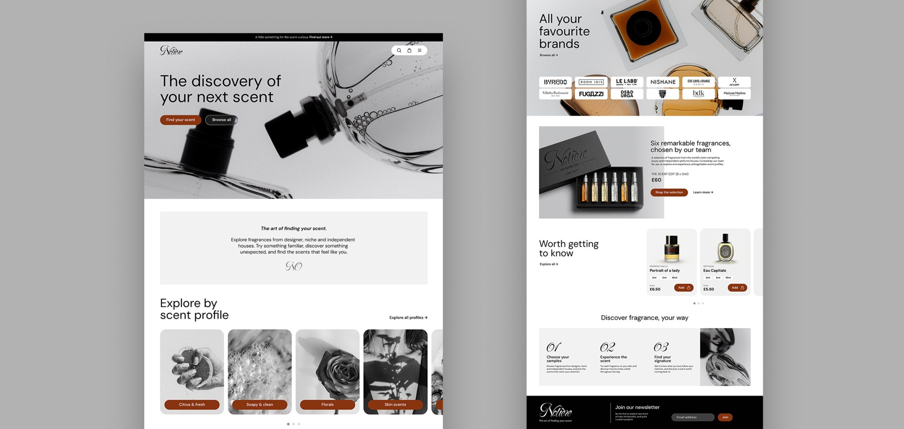
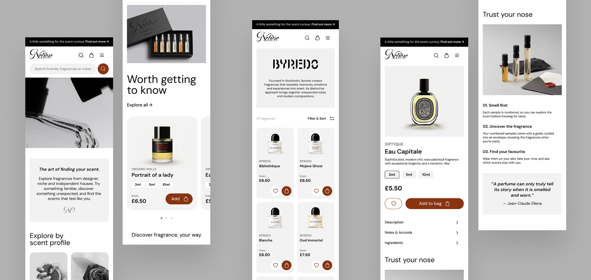
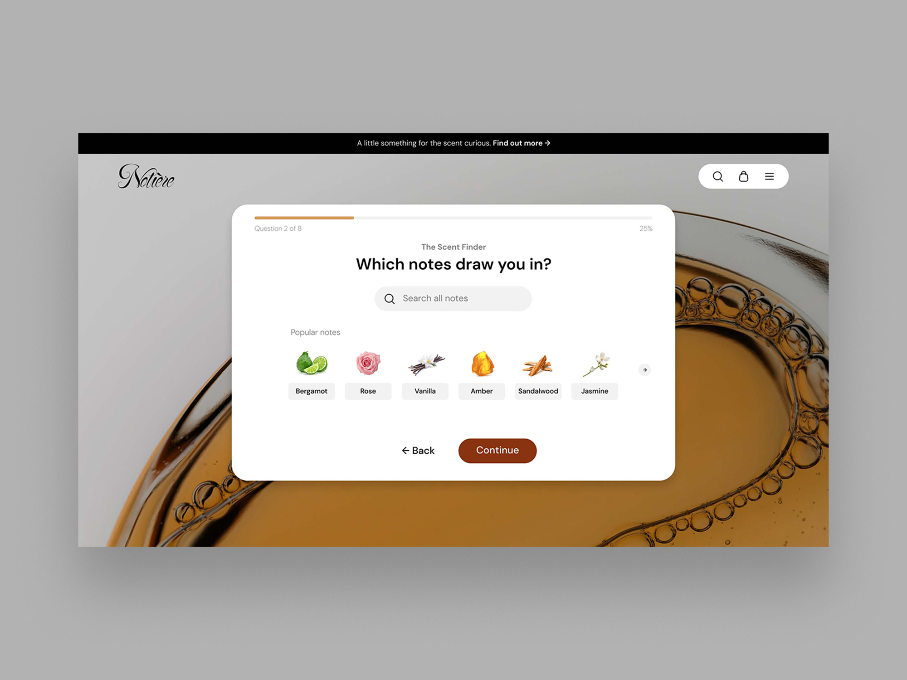
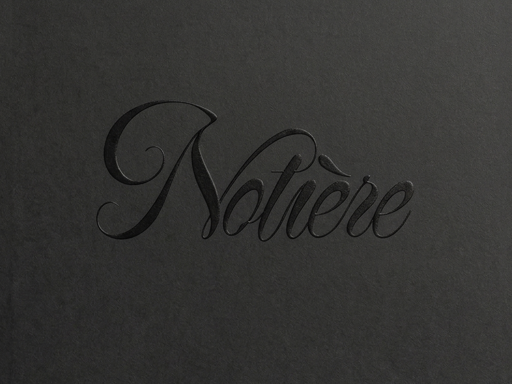
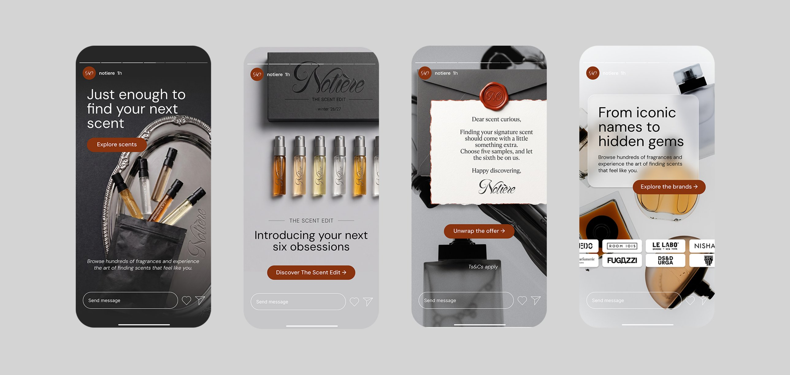
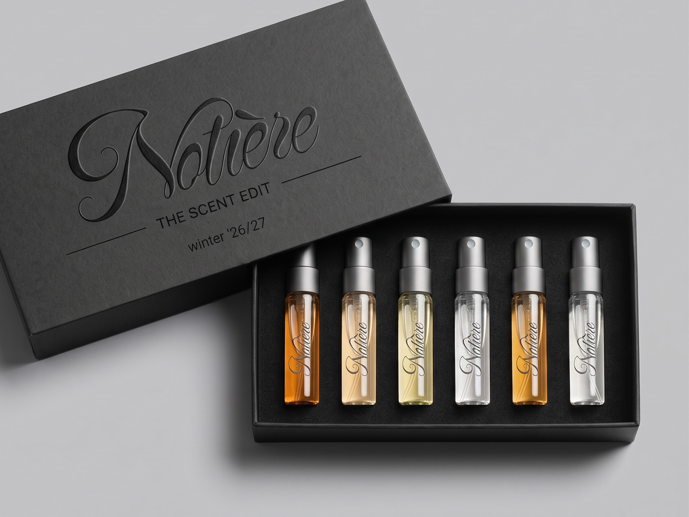
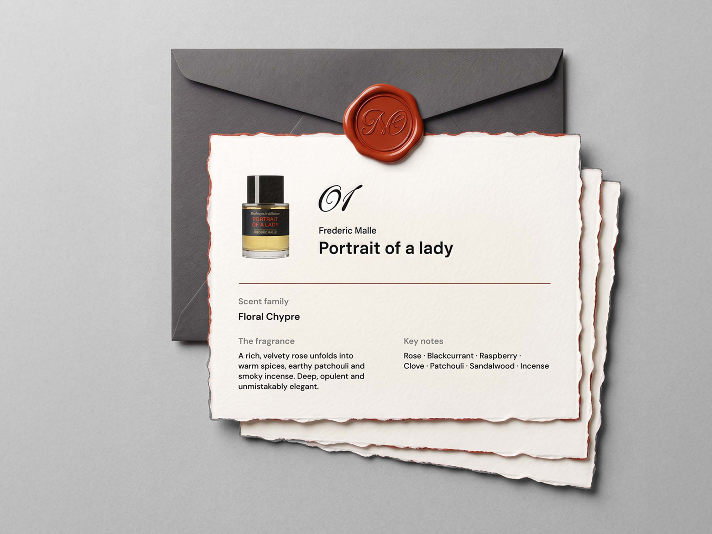
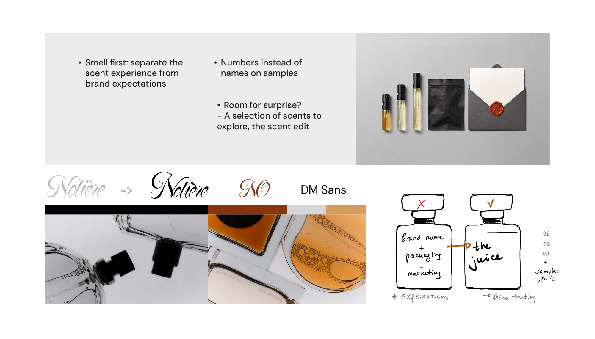

Project type

Notière is a fragrance discovery experience designed to make finding a signature scent simple and personal. A guided online journey and numbered, unbranded samples let people choose with their senses first.
Reimagine fragrance sampling as a considered, premium experience. Brand names and packaging often shape our expectations before we’ve smelled anything, and a wide range can be hard to navigate. Discovery needed to feel easy, whatever someone’s fragrance knowledge.
The user journey shapes everything, from the structure of the site and the order of products to how people find their match. Online, a scent quiz, smart search and scent profiles offer three ways in. Samples carry numbers instead of names, so people smell first and reveal each scent later in an enclosed guide.
The project brings together a brand identity, a responsive website, The Scent Edit sample box and a four-part social campaign. It showed how balancing brand expression with usability keeps the experience consistent across digital and physical touchpoints.







Concept board and user flow.

Next project
Branding, Packaging, Campaign Rollout